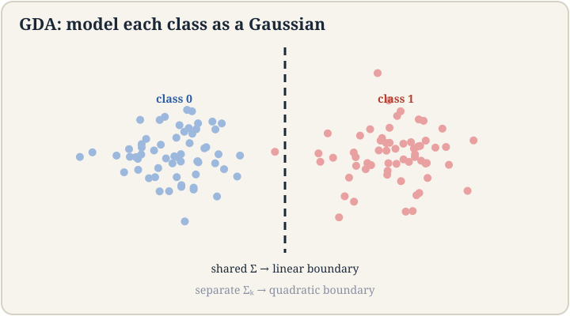
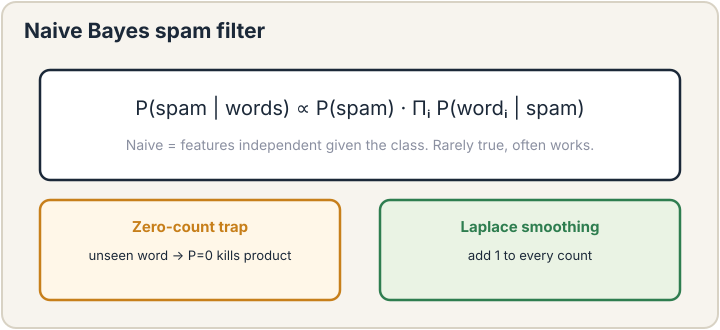

Lecture 5: Generative Models, GDA and Naive Bayes
Video blocked (ad-blocker or local file mode).
Watch on YouTubeVideo not loading? Watch on YouTube
Original lecture. Chris Ré introduces generative models with GDA, then builds a Naive Bayes spam filter.
How to read this lesson
This lesson has two levels. Level 1 (Core) contains what you need to understand everything that follows in CS229 and the courses that build on it. Level 2 (Deep) contains what you need for correct, interview-grade understanding. Read Level 1 straight through. Return to Level 2 when you want depth.
No prerequisites are assumed. Every term is defined at first use. GLMs and MLE were defined in lectures 3 and 4; they are reused, not re-explained.
Level 1: Generative versus discriminative
So far every model learned p(y | x): given the input, predict the label. That is a discriminative model. It draws the boundary and ignores how the data was generated 00:53 ⏱00:53.
A generative model learns p(x | y) and p(y): how each class generates its data, and how common each class is. Then Bayes’ rule flips it into p(y | x) for decisions. This is the first generative model of the course 00:12 ⏱00:12, and the G in GPT names this family. Generative models can do something discriminative ones cannot: sample new data. To classify you only need the boundary. To generate, you need the full story of each class.
The tradeoff: generative models make stronger assumptions. Stronger assumptions mean less data needed when the assumptions hold, and confident wrongness when they fail. Discriminative models assume less and usually win on pure classification accuracy with enough data. That sentence is the punchline of the lecture. Details below.
For pure classification with plenty of data, discriminative models usually win because they assume less. For small data, missing features, or when you need to generate new examples, generative models win because their stronger assumptions do more work per example. The interview answer is the tradeoff, not a winner. Because the model learns the full distribution of each class, which in principle lets you sample new members. GDA is rarely used to generate images, but the same mathematics with neural networks becomes the diffusion models of lecture 11.
Level 1: Gaussian discriminant analysis
Gaussian discriminant analysis (GDA) models each class as a Gaussian. Class 0: x drawn from N(mu_0, Sigma). Class 1: x drawn from N(mu_1, Sigma). Same covariance, different means 23:55 ⏱23:55. Plus a class prior p(y): how common each class is.
Fitting is closed form 37:00 ⏱37:00. The MLE of each mean is the average of its class’s points. The MLE of the shared covariance is the average scatter around the class means. The prior is the class fraction. No iterations. Count, average, done.

To classify a new point, compare p(x | y=0) p(y=0) against p(x | y=1) p(y=1). Bigger wins. With shared covariance, the quadratic terms cancel and the decision boundary is a straight line: the set of points equally well explained by both classes. Give each class its own covariance and the boundary becomes quadratic 02:49 ⏱02:49: curves instead of lines, at the cost of more parameters.
The Gaussian density has a quadratic term x^T Sigma^-1 x. With one shared Sigma, that term is identical for both classes and cancels in the comparison. What remains is linear in x. Separate covariances keep two different quadratics, and their difference is quadratic. Shared structure cancels; unshared structure curves. When the classes genuinely spread differently: one tight cluster, one diffuse cloud. You pay with parameters: a full covariance per class in d dimensions costs O(d^2) each. Small data cannot afford it. The shared version is the regularized choice.
Level 1: The punchline about logistic regression
GDA with shared covariance produces a posterior p(y | x) that has exactly the logistic sigmoid form. Same sigmoid as lecture 3. Different route to the same function.
Here is the punchline the lecture builds toward. Logistic regression is more powerful than you think. Reason: logistic regression learns the sigmoid’s parameters directly, without assuming the classes are Gaussian. GDA assumes Gaussian classes and derives the sigmoid. If the Gaussian assumption is wrong, GDA suffers and logistic regression does not. Both can only draw the same linear boundary, but logistic regression gets there with weaker assumptions.
The general lesson: a discriminative model with the same functional form as a generative model’s posterior is at least as flexible. The generative assumptions buy data efficiency. They cost robustness.
Level 1: Naive Bayes and the spam filter
Naive Bayes is the generative model for discrete features 03:16 ⏱03:16. The demo is a spam filter 03:20 ⏱03:20. Features: which words appear in the email. Model: p(word | spam) and p(word | not spam) for every word, plus the spam prior.

The naive part is the independence assumption: given the class, words occur independently. P(“free”, “money” | spam) = P(“free” | spam) times P(“money” | spam). This is false. Words correlate. The model works anyway, because classification only needs the right winner, not correct probabilities.
Fitting is counting. P(word | spam) = (spam emails containing the word) / (spam emails). The trap: a word never seen in training gets probability zero, and one zero kills the whole product. The fix is Laplace smoothing: add one fake count to every word 37:51 ⏱37:51. No event is ever truly impossible. Smoothing is the admission that the training set is finite.
Classification needs the correct argmax, not correct probabilities. Correlated words push the scores up or down together, and the winner often survives the distortion. The independence assumption damages the probability values but usually preserves their order. When you need calibrated probabilities, not just the winner, the naivety hurts. Any unseen word zeroes the entire product for its class, no matter how strong the other evidence. One unknown word vetoes everything. In production this happens constantly: new slang, new product names. Smoothing is not optional polish. It is load-bearing.
Level 2: GDA versus logistic regression, formally
Both models end at p(y=1 | x) = sigmoid(theta^T x + b) under shared covariance. Count parameters. GDA estimates two means (2d numbers), one covariance (d^2/2 numbers), one prior. Logistic regression estimates theta (d numbers) plus bias. GDA estimates O(d^2) quantities to draw the same line logistic regression draws with O(d). When d is large and data is scarce, those extra parameters are noise. This is the formal version of “stronger assumptions.”
There is a converse. If the Gaussian assumption is exactly true, GDA needs fewer examples to reach a given accuracy: it uses the data more efficiently because it knows the shape. The lecture’s ranking for classification accuracy with big data: logistic regression first, GDA second. With tiny data and near-Gaussian classes, the order can flip.
Level 2: Generative models as the course thread
This lecture opens a thread that runs to the end of the course. GDA generates continuous vectors. Naive Bayes generates word counts. Lecture 9’s mixture models generate clusters. Lecture 11’s diffusion models generate images. The mathematics escalates, but the question stays the same: what story about p(x) makes the observed data probable? Learn to hear that question and the second half of the course unlocks.
Recap: the whole lesson on one screen
Eight ideas carry this lecture. Read each card. Say the core sentence out loud. If you can, you own the lesson.
Model how each class generates data, then flip with Bayes' rule. Discriminative models learn p(y|x) directly. Generative can sample. Discriminative assumes less.
Key: p(x|y) plus p(y), then Bayes
Class k: N(mu_k, Sigma). Shared covariance, different means. Fit by averaging: closed form, no iterations.
Key: means are class averages
The quadratic terms cancel in the comparison. Separate covariances keep them: quadratic boundary, more parameters, more risk.
Key: shared cancels, unshared curves
Same sigmoid, weaker assumptions. GDA's Gaussian story can be wrong. Direct fit of the boundary cannot. Less data needed if the story is true.
Key: same form, fewer assumptions
Multiply per-word likelihoods. False but useful: the winner usually survives the distortion. Fitting is counting.
Key: product of P(word|class)
Words are features. P(spam|words) proportional to prior times product of word likelihoods. A real, deployed idea, not a toy.
Key: count words per class
Unseen words get zero without it, and one zero vetoes everything. Add a fake count everywhere. No event is impossible.
Key: never multiply by zero
GDA, Naive Bayes, mixtures, diffusion: one question throughout. What story about p(x) makes the data probable? The G in GPT.
Key: model the data, not just the boundary
Official sources and further reading
Official: - Lecture 5 video: generative versus discriminative 00:53 ⏱00:53, shared covariance 23:55 ⏱23:55, closed form 37:00 ⏱37:00, Naive Bayes 03:16 ⏱03:16, Laplace 37:51 ⏱37:51. - CS229 Spring 2026 official course notes: GDA and Naive Bayes chapters.
Further reading: - Ng and Jordan (2002), “On Discriminative vs. Generative Classifiers”: the formal comparison this lecture follows. - Manning, Raghavan, and Schütze, Introduction to Information Retrieval, Chapter 13: Naive Bayes text classification in full.
Caveats from these sources. The “discriminative usually wins” ranking assumes enough data; with tiny datasets the order flips. Gaussian assumptions on real features are routinely violated; check with a plot before trusting GDA’s probabilities. Laplace smoothing’s add-one is the simplest choice, not the optimal one; tuned smoothing exists.
Connections to the other courses
- CS336: the G in GPT is this lecture’s generative idea scaled up; language models learn p(x) over token sequences.
- CS224N: Naive Bayes was the baseline text classifier before neural methods; Laplace smoothing reappears in n-gram language models.
- CS329H: generative classifiers are the simplest decision-theoretic agents: decide by comparing expected outcomes under each class story.
GDA and Naive Bayes cheatsheet. Generative: learn p(x|y), p(y); Bayes flips to p(y|x); can sample. Discriminative: learn p(y|x) directly; assumes less. GDA: class k ~ N(mu_k, Sigma); MLE = class averages; shared Sigma gives linear boundary; separate gives quadratic. Punchline: logistic regression reaches the same sigmoid with weaker assumptions. Naive Bayes: words independent given class; fit by counting; Laplace smoothing adds one to kill zero counts.
Stronger story, cheaper data. Generative assumptions do more work per example. When the story is true, you need less data. When it is false, you are confidently wrong. Every generative model in this course trades on that deal.
Sources
- VIDEOLecture 5 video, Stanford Online YouTube
- NOTESOfficial subtitle transcript (en-US)
- NOTESCS229 Spring 2026 official course notes (local PDF)